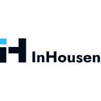
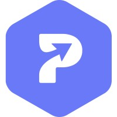

I build production AI and cloud systems and lead the team that ships them.
Currently Senior AI Engineering Lead at Salty Accessories, building production Generative AI and cloud-native systems on AWS: LLM agents with RAG, event-driven backends, and the data platform behind them. Five years turning manual, tool-heavy operations into systems that move revenue, cost, and operational efficiency.
Senior Software Engineer (AI & Cloud) with 5 years of experience building production-ready Generative AI and cloud-native systems on AWS, currently leading AI engineering at Salty. Expert in integrating LLM APIs (Bedrock, OpenAI, Claude), RAG, and agentic frameworks (LangGraph/LangChain) into event-driven, serverless backends (Lambda, SQS, EventBridge) and RESTful APIs in Python and Node.js. Proven track record in delivering measurable gains in revenue, cost, and operational efficiency for high-growth startups through secure, CI/CD-driven delivery.
~2,000/daycalls handled by AI agents, converting at 3%
Rs 15Lestimated monthly revenue recovered
100+data pipelines, up from 35+ in 60 days
$10.8Ksaved per year in tool costs
Selected Work
Agentic AI
AI Calling & Chat Agents
Autonomous calling and chat agents on AWS (SQS, EventBridge) with Claude and OpenAI, handling ~2,000 calls a day and lifting conversion to 3% on a Rs 850 average order value, an estimated Rs 15L in recovered monthly revenue.
Claude · OpenAI · SQS · EventBridge · MongoDB Atlas
Computer Vision
Catalog & Image Pipeline
Computer Vision extracts product attributes at 98% accuracy, and an image generation pipeline produces studio-quality images for ~200 SKUs, cutting processing from 20 minutes to under 1 minute per SKU.
Bedrock · OpenAI · Gemini · SQS · S3/CloudFront
Data Platform
Autonomous Data Infrastructure
Airflow-orchestrated platform on AWS replacing third-party ETL: 35+ pipelines in 60 days, scaled to 100+, saving $10.8K per year in tool costs.
Airflow · AWS Data Lake · EC2 · dbt
Experience
Salty Accessoriespresent
Senior AI Engineering Lead · AI & Data Platform
Dec 2025 – Present · Delhi, India
AI agents handling ~2,000 calls a day, with an estimated Rs 15L in recovered monthly revenue.
Built an autonomous AI calling and chat agent platform using AWS (SQS, EventBridge) and Claude/OpenAI, handling ~2,000 calls per day across multiple use cases and lifting conversion to 3% on a Rs 850 average order value, generating an estimated Rs 15L in recovered monthly revenue.
Implemented a RAG-based knowledge base over past customer chats and call transcripts using embeddings and MongoDB Atlas Vector Search, grounding agent responses in real resolutions and keeping them within approved actions.
Architected a unified, autonomous data infrastructure on AWS (EC2, Data Lake), migrating from expensive third-party ETL tools to a custom Airflow-orchestrated ecosystem; deployed 35+ high-frequency pipelines (Shopify, Amazon, Myntra) within the first 60 days and scaled to 100+, saving $10.8K per year in tool costs.
Developed a Multimodal AI image system for end-to-end catalog automation, utilizing Computer Vision to extract product attributes with 98% accuracy and an image generation pipeline (AWS Bedrock, OpenAI, Gemini, SQS priority queues, S3/CloudFront) to produce studio-quality images for ~200 SKUs, reducing manual processing time from 20 minutes to <1 minute per SKU and eliminating manual editing hours.
Streamlined internal operations by replacing spreadsheets and paid tools with 12 custom internal apps (Node.js, FastAPI, MongoDB) covering warehouse bundling, finance reconciliation, AOP planning, HRMS and attendance, shipment video management, and regulatory-compliant barcode and label generation, adding role-based access and audit logging while cutting manual work and subscription costs.
Built a unified financial intelligence suite providing founders and finance teams with a holistic view of P&L, automated expense/income tracking, and multi-channel ROI to optimize strategic spend and phase out underperforming platforms.
Engineered event-driven integrations using AWS Lambda, SES, SNS, and ECS Fargate, including webhook processors, an email campaign platform, and a Slack–Jira request bot, deployed through GitHub Actions CI/CD pipelines across 13 repositories.
Developing an "Agentic Commerce Protocol" leveraging LangChain-powered autonomous agents to enable customers to browse and purchase products via LLM-driven interfaces on both the website and mobile app.
Directing a cross-functional team of 4 software and data analysts while spearheading the strategic shift toward a data-driven, AI-first company culture.

InHousen1 yr
Data Scientist & AI Engineer
Jan 2025 – Dec 2025 · Netherlands (Remote)
Engineered an end-to-end sales forecasting pipeline using XGBoost and LSTM, achieving ~90% accuracy by implementing a custom feature engineering process that captured complex seasonality and promotional impacts.
Developed a proactive inventory management system that forecasted stockouts and recommended order quantities, reducing lost sales revenue and optimizing cash flow by preventing overstocking.
Architected an AI agentic framework using LangChain and LangGraph for hyper-personalized outreach, boosting reply rates from 2% to 10% and significantly shortening the client's sales cycle.
Implemented a RAG-based AI chatbot providing stakeholders with on-demand, natural language access to critical business intelligence, reducing reliance on the data team for ad-hoc reports.
Designed an AI-driven lead scoring model analyzing LinkedIn data to rank candidates by their probability of engagement, enhancing the relevance and success of recruitment outreach.

Pintel.ai6 mos
Data Science Engineer
Jul 2024 – Dec 2024 · Bengaluru, India
Led development of AI-powered personalized message sequences, boosting open rates by ~30% by leveraging NLP to extract and incorporate insights from social media activity into outreach copy.
Built and deployed end-to-end AI solutions for B2B clients, automating the aggregation of firmographic and technographic data to identify high-intent target accounts.
Created AI-driven tools for lead filtering, qualification, and scoring, improving lead management efficiency and helping clients target high-value prospects more effectively.
Managed the full-cycle execution of personalized campaigns for over 6,000 leads, ensuring seamless data flow from filtering and scoring through to automated delivery.
Skidos Learning Labs3 yrs
Senior Data Analyst
Aug 2021 – Jul 2024 · Delhi, India
Orchestrated a rigorous A/B testing framework, leading to a ~15% UX improvement by validating changes to the user onboarding flow and subscription funnels.
Analyzed pre- and post-SDK releases by monitoring performance and stability metrics, driving a ~15% improvement in key business outcomes and enabling over 10 successful feature launches.
Segmented high-value users using RFM analysis and clustering models, informing the development of targeted features that boosted engagement and retention by ~15%.
Worked on ETL pipelines for 10+ projects, ensuring high reliability and uptime for business-critical data.
Rolled out a weekly Learning Report that increased user engagement by ~25% and comprehension of weekly progress by 30%.
Delivered over 10 in-depth analyses, uncovering insights that improved product quality, user experience, and overall business growth.
Education
Guru Ghasidas UniversityAug 2017 – Jun 2021 · CG, India